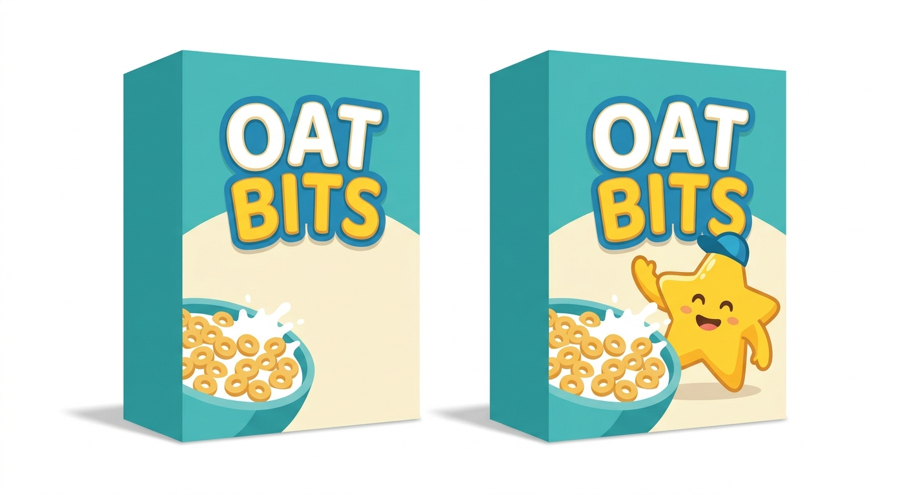
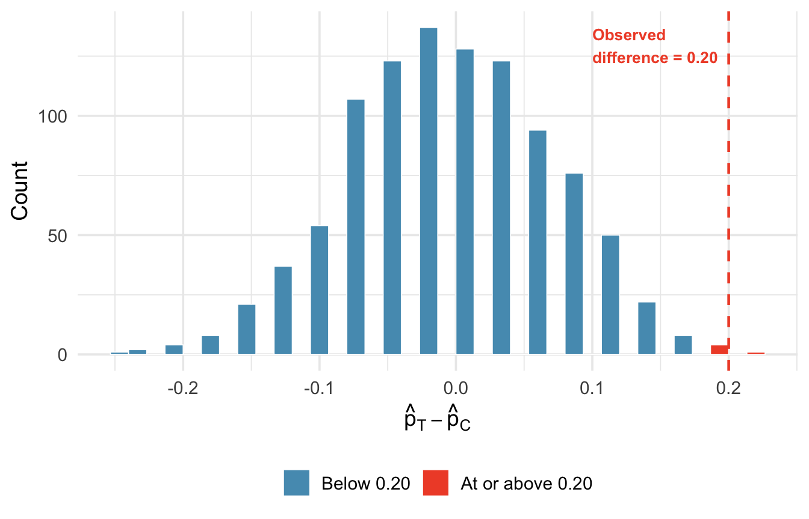
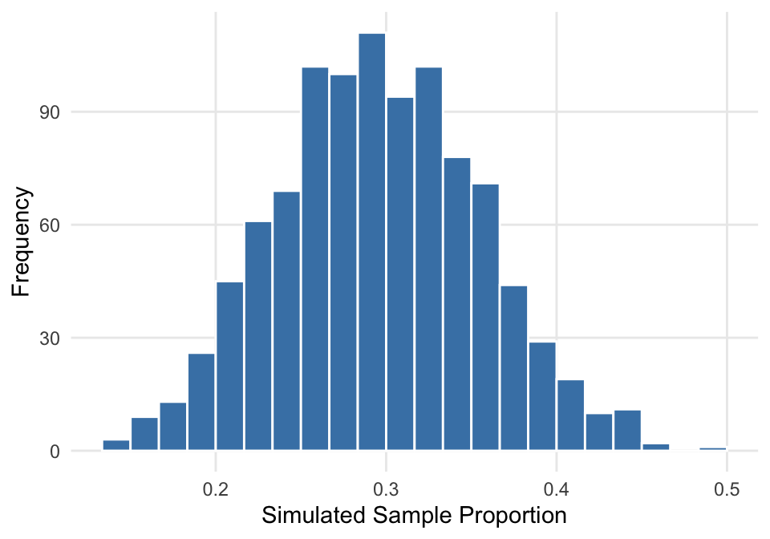
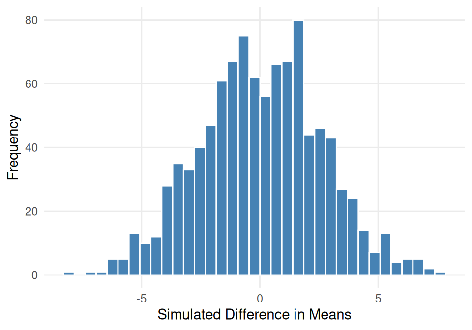

2.2 Randomization Tests
Statistical inference is primarily concerned with understanding and quantifying the uncertainty of parameter estimates. While the equations and details change depending on the setting, the foundations for inference are the same throughout all of statistics. In this chapter, we introduce the hypothesis testing framework — a formal method for evaluating competing claims about a population using data. We learn how to build randomization distributions by shuffling data under the assumption that there is no effect, and we use these distributions to compute p-values that quantify the strength of the evidence.
Key Concepts
- Recognize when and why statistical tests are needed
- Specify null and alternative hypotheses based on a question of interest, defining relevant parameters
- Interpret a \(p\)-value as the probability of results as extreme as the observed results happening by random chance, if the null hypothesis is true
- Estimate a \(p\)-value from a randomization distribution
- Comparatively quantify strength of evidence using \(p\)-values
- Distinguish between one-tailed and two-tailed tests in estimating \(p\)-values
- Make a formal decision in a hypothesis test by comparing a \(p\)-value to a given significance level
- State the conclusion to a hypothesis test in context
- Interpret Type I and Type II errors in hypothesis tests
- Recognize a significance level as measuring the tolerable chance of making a Type I error
- Recognize that statistical descernibility is not always the same as practical significance
Motivation: Cereal example
Consider the following scenario: A sample of 80 four-to six-year olds participated in a study in which they were asked to taste two cereals, both called “Oat Bits” (in random order). The cereal in each box was exactly the same, but the boxes differed in the fact that one of the boxes had pictures of a star mascot and the other did not.
- If the cartoons make no difference, because after all the cereal is the same in each box, how many of the 80 children do you expect to pick the cartoon box? What sample proportion is this?
- Suppose that in this study, 52 of the children chose the box with cartoons. What sample proportion is this? Does this lead you to believe that there was a preference toward the cartoon box, or would you expect this sample proportion to occur by chance even if there was no preference? (We will use StatLens to explore the sampling distribution for the proportion to determine what values are likely to occur.)
- Using the simulation from part b), what sample proportions do we expect to see if there is no preference toward the cartoons?
The hypothesis testing framework
There is almost always variability in data — one dataset will not be identical to a second dataset even if they are both collected from the same population using the same methods. However, quantifying the variability in the data is neither obvious nor easy. Answering the question “how different is one dataset from another?” is not trivial.
The question at the heart of hypothesis testing is: Could the pattern we observe in the data have arisen from chance alone, or is there something real going on?
Hypothesis testing
A hypothesis test, or statistical test uses data from a sample to assess a claim about a population.
A hypothesis test is a statistical technique used to evaluate competing claims using data. The process involves:
- State the hypotheses: Define a null hypothesis (\(H_0\)) and an alternative hypothesis (\(H_A\)).
- Collect data: Gather evidence that bears on the hypotheses.
- Assess the evidence: Determine how likely the observed data would be if the null hypothesis were true.
- Draw a conclusion: Decide whether the evidence is strong enough to reject the null hypothesis.
If the null hypothesis and the data notably disagree, then we reject the null hypothesis in favor of the alternative hypothesis. There are many nuances to hypothesis testing, and we will discuss these ideas throughout this chapter and those that follow.
Null and alternative hypotheses
Usually, a null hypothesis, notated \(H_0\), is a claim that there really is “no effect” or “no difference”, or represents the status quo.
An alternative hypothesis, notated \(H_A\), is the claim for which we seek discernable evidence, and is established by observing evidence that contradicts the null hypothesis and supports the alternative hypothesis.
In the first step of a hypothesis test, we must state the hypotheses. The hypotheses consist of the null hypothesis and the alternative hypothesis. The null hypothesis, denoted \(H_0\), often represents a skeptical perspective or a claim of “no difference” or “no effect.” It assumes that any observed pattern in the data is due to chance alone. The alternative hypothesis, denoted \(H_A\), represents the claim under investigation, typically that there is a real difference, effect, or relationship. The alternative hypotheisis is usually the reason the research was conducted in the first place.
Statistical tests, and in particular hypothesis tests, behave in much of the same way as the US justice system. The US court system considers two possible claims about a defendant: they are either innocent or guilty. We can set up these claims in a hypothesis framework. The skeptical perspective (null hypothesis) is that the person is innocent until evidence is presented that convinces the jury the person is guilty (alternative hypothesis).
\[H_0: \text{The defendant is innocent.}\] \[H_A: \text{The defendant is guilty.}\]
Caution
Notice that if a jury finds a defendant not guilty, this does not necessarily mean the jury is confident in the person’s innocence. They are simply not convinced of the alternative. This is also the case with hypothesis testing: even if we fail to reject the null hypothesis, we do not accept the null hypothesis as truth. Failing to find evidence in favor of the alternative is not the same as finding evidence that the null hypothesis is true.
Sets of common hypotheses
The first set of statistical hypotheses that we will investigate in this class are for population parameters and differences in population parameters. The hypotheses have the following forms:
- Single Proportion (\(p_0\) is the proportion claimed or status quo value):
- Null hypothesis: \[H_0: p = p_0\]
- Alternative hypothesis (pick one): \[H_A: p \neq p_0\] \[H_A: p > p_0\] \[H_A: p < p_0\]
- Single Mean (\(\mu_0\) is the average claimed or status quo value):
- Null hypothesis: \[H_0: \mu = \mu_0\]
- Alternative hypothesis (pick one): \[H_A: \mu \neq \mu_0\] \[H_A: \mu > \mu_0\] \[H_A: \mu < \mu_0\]
- Difference in Proportions (\(p_1\) and \(p_2\) are the population proportions for each group):
- Null hypothesis: \[H_0: p_1 - p_2 = 0\]
- Alternative hypothesis (pick one): \[H_A: p_1 - p_2 \neq 0\] \[H_A: p_1 - p_2 > 0\] \[H_A: p_1 - p_2 < 0\]
- Difference in Means (\(\mu_1\) and \(\mu_2\) are the population averages for each group):
- Null hypothesis: \[H_0: \mu_1 - \mu_2 = 0\]
- Alternative hypothesis (pick one): \[H_A: \mu_1 - \mu_2 \neq 0\] \[H_A: \mu_1 - \mu_2 > 0\] \[H_A: \mu_1 - \mu_2 < 0\]
Alternative hypotheses containing “>” or “<” are called one-sided alternatives and alternative hypotheses containing “\(\neq\)” are referred to as two-sided alternatives. One-sided alternatives specify a particular direction for the alternative, while two-sided alternatives do not.
Class Example 2.2.1: Defining statistical hypotheses
For each of the following scenarios, state the null and alternative hypotheses with the relevant parameter(s).
- We are testing to see if the average income is different in eastern states than western states.
- We are testing to see if the average income is greater in eastern stats than western states.
- We are testing to see if a particular coin is weighted (i.e., not fair).
- We are testing to see if the average rent in La Crosse is less than $850.
- We are testing to see if children have a preference for the cereal box with cartoons (above).
Case study: Opportunity cost
How rational and consistent is the behavior of the typical American college student? Here, we explore whether reminding students that money not spent now can be spent later causes them to be thriftier.
The participants were 150 students, all given a scenario about purchasing a video on sale for $14.99. Half (the control group) were given these options:
A. Buy this entertaining video.
B. Not buy this entertaining video.
The other half (the treatment group) saw a slightly modified option (B):
A. Buy this entertaining video.
B. Not buy this entertaining video. Keep the $14.99 for other purchases.
In this study, we define a “success” as a student who chooses not to buy the video and want to compare the proportion of students who do not buy the video in the control group compared to the treatment group.
Class Example 2.2.2: Opportunity cost
Using the opportunity cost case study, answer the following questions:
- Is this an observational study or an experiment? How does the thype of study impact what can be inferred from the results?
- State the null and alternative hypotheses for this study.
The results are summarized below:
| Buy video | Not buy video | Total | |
|---|---|---|---|
| Control | 56 | 19 | 75 |
| Treatment | 41 | 34 | 75 |
| Total | 97 | 53 | 150 |
Class Example 2.2.3: Opportunity cost, revisited
Compute the difference in the sample proportions of students who choose not to buy the video.
Building a randomization distribution
What would it mean if the null hypothesis were true? It would mean that each student would make the decision on whether to buy the video without regard to the change in the second option, (B). The 97 purchases and 53 non-purchases were determine by factors other than the verbage of the options, and the difference we observed was just bad luck in how the files happened to be assigned.
Suppose the students’ decision were indpendent of the phrasing of the choices. Then, if we conducted the experiment again with a different random assignment of choices to the students, differences in the proportions of the choices would be based only on random fluction in decisions. We can perform this randomization, which simulates what would have happened if the students’ decisions had been independent of the phrasing but we had distributed the phrases differently.
The card-shuffling metaphor
Think of the data as 150 cards:
- 97 red cards (buy video)
- 53 white cards (not buy video)
In the actual study, 75 cards were dealt to the ‘control’ pile and 75 to the ‘treatment’ pile. Under the null hypothesis, the color of each card (whether to buy the video) has nothing to do with which pile it lands in.
To simulate what the null hypothesis look like, we:
- Thoroughly shuffle all 150 cards together.
- Deal 75 into a ‘control’ pile and 75 into a ‘treatment’ pile
- Count the number of white (not buy video) in each pile and compute the difference in proportions.
This gives us one simulated difference under the null hypothesis, a difference that arose purely from the random shuffle, not from the phrasing.
Many simulations
A randomization distribution approximates a sampling distribution from a population where the null hypothesis is true.
One simulation is not enough. We need to repeat the shuffle-and-deal process many times to build up a picture of what chance alone looks like. Using a computer, we can do this hundreds or thousands of times creating a randomization distribution showing how likely different statistics are to occur if \(H_0\) is true.

Under the null hypothesis, we would observe a difference of at least +20% about 0.6% of the time. That is very rare! We conclude the data provide strong evidence there is a treatment effect: reminding students that they could spend money later lowers their chance of making a purchase. Because this is an experiment (with random assignment), we can make a causal claim.
P-values
The \(p\)-value of the sample data in a statistical test is the probability of obtaining a sample statistic as extreme as (or more extreme than) the observed sample when the null hypothesis is true.
When we claim that we have evidence of our alternative hypothesis, the underling question we are asking is
How unusual is it to see a sample statistics as extreme as the sample statistic we observed, if \(H_0\) is true?
In statistics, we use the \(p-value\) to answer this question. The \(p\)-value is the proportion of the randomization distribution that is as extreme (or more extreme than) over observed statistic. Since the randomization distribution is built assuming the null hypothesis is true, the \(p\)-value is also defined as the probability of observing data at least as favorable to the alternative hypothesis as our current dataset, if the null hypothesis were true. We typically use a summary statistic of the data, such as a difference in the proportion, to compute the \(p\)-value.
If the summary statistic lies in the tails of the distribution, we have strong evidence against \(H_0\) in support of \(H_A\). The smaller the \(p\)-value, the more evidence we have to reject the null hypothesis.
Randomization Distributions and p-values
In order to correctly estimate the \(p\)-value from a randomization distribution, we need to keep our alternative hypothesis in mind!
To find the \(p\)-value using a randomization distribution, we:
- For a one-sided alternative hypothesis: Find the proportion of randomization samples that equal or exceed the original statistic in the direction (tail) indicated by the alternative hypothesis.
- For a two-sided alternative hypothesis: Find the proportion of randomization samples in the smaller tail at or beyond the original statistic and then double the proportion to account for the other tail.
Class Example 2.2.4: Estimating a \(p\)-value from a randomization distribution
The figure below shows a randomization distribution for testing \(H_0: p=0.3\) vs \(H_A: p <0.3\). In each case, use the distribution to decide which value is closer to the \(p\)-value for the observed sample proportion. There are 1000 randomizations given in the figure below.

- Why is the distribution centered at 0.3?
- The \(p\)-value for \(\widehat{p}=0.15\) is closest to: 0.04 or 0.40?
- Which proportion, \(\widehat{p}=0.20\) or \(\widehat{p}=0.10\), provides the strongest evidence to suggest that \(H_0\) is not true? Explain.
Class Example 2.2.5: Estimating a \(p\)-value from a randomization distribution…continued
The figure below shows a randomization distribution for testing \(H_0: \mu_1-\mu_2 = 0\) vs \(H_A: \mu_1-\mu_2 \neq 0\). The statistic used for each sample is \(D=\overline{x}_1-\overline{x}_2\). In each case, use the distribution to decide which value is closer to the \(p\)-value for the observed sample difference in averages. There are 1000 randomizations given in the figure below.

- The \(p\)-value for \(D=\overline{x}_1-\overline{x}_2 = -2.9\) is closest to: 0.01 or 0.25?
- The \(p\)-value for \(D=\overline{x}_1-\overline{x}_2 = 1.2\) is closest to: 0.30 or 0.60?
- Of the two values of \(D\) above, which provides strongest evidence to suggest that \(H_0\) is not true? Explain.
Class Example 2.2.6: Migraine Acupuncture Trial
Can acupuncture relieve migraine pain? Allais et al. (2011) conducted a randomized controlled study where 89 individuals who suffered from migraines were randomly assigned to receive either acupuncture (treatment, \(n = 43\)) or placebo acupuncture (control, \(n = 46\)). The placebo acupuncture involved placing needles at non-acupuncture-point locations. Researchers recorded whether each patient was pain-free 24 hours after treatment. The full data are in the data set Migrane Acupuncture Trial on StatLens.
- What are the null and alternative hypotheses for this study?
- What was the sample statistic for these data?
- What is the probability that the sample results (or those more extreme) occurred by random chance, assuming that the acupuncture had no effect?
- How would your answer to c) change if the alternative hypothesis was two-sided?
Class Example 2.2.7: Calorie Counts
Is the average amount of kilocalories from a major U.S. fast food chain menu item more than 525 kilocalories? Calorie counts for 515 menu items from eight major fast food chains were collected. The full data are in the data set Fast Food Calories on StatLens.
- State the null and alternative hypotheses
- What is the sample statistic?
- To create the randomization distribution, what do we have to assume?
- What is the \(p\)-value for this study?
Class Example 2.2.8: Cereal study revisited
Recall the movtivating cereal study. We were trying to determine if children had a preference for the cereal in the box with the cartoon. In the study 52 out of 80 children chose the box with cartoons. Use StatLens to find the \(p\)-value for this scenario.
Interpreting the \(p\)-value
- A small p-value (e.g., below 0.05) means that the observed result would be rare if the null hypothesis were true. This is evidence against the null hypothesis.
- A large p-value (e.g., above 0.10) means that the observed result is not particularly unusual under the null hypothesis. The data do not provide strong evidence against the null hypothesis.
- The p-value is not the probability that the null hypothesis is true. It is the probability of the observed data (or more extreme data) given that the null hypothesis is true.
Caution
A common mistake is to interpret the p-value as the probability that the null hypothesis is true (e.g., “there is a 2% chance that sex has no effect on promotions”). This is incorrect. The p-value tells us how surprising the data would be if the null hypothesis were true, not how likely the null hypothesis is to be true.
Statistical discernibility
Statistical tests begin under the assumption that the null hypothesis,\(H_0\), is true. In order to reject \(H_0\), sufficient evidence to its contrary must be collected – just like in order to convict a defendant, sufficient evidence must be presented to the judge and/or jury. What exactly is sufficient evidence? In our courtroom example, evidence must be provided so that decisions can be made “beyond a reasonable doubt.” In statistical tests, the data results must be unrealistic assuming \(H_0\) is true. This means that we have found evidence to support \(H_A\).
Decision framework
When we make a formal decision, we have two options:
- Reject \(H_0\)
- Do not reject \(H_0\)
For hypothesis tests, there are two conclusions:
- We reject \(H_0\) when the sample statistic is extreme assuming \(H_0\) is true.
- We do not reject \(H_0\) when the sample statistic is not too extreme assuming \(H_0\) is true.
If we reject the null hypothesis, we say our finding is statistically discernable.
If we reject the null hypothesis, we say our finding is statistically discernable. Not rejecting the null hypothesis is not the same thing as accepting the null hypothesis. The null hypothesis is never accepted because the hypothesis test procedure is not designed to rule in \(H_0\), but only to rule it out. That is, evidence is never collected with the idea of favoring or proving the null hypothesis. Sample data are collected for the purpose of looking for evidence against \(H_0\). To arrive at the correct conclusion, the \(p\)-value must be small enough to be considered unusual.
What “statistically discernible” does and does not mean
“Statistically discernible” means the p-value fell below the chosen discernibility level. It does not necessarily mean the effect is large or practically important. A very large sample can detect a tiny difference as “statistically discernible” even if the difference is too small to matter in practice.
Conversely, “not statistically discernible” does not mean there is no effect. It may simply mean the sample was too small to detect the effect.
How small is small enough?
We use the decernibility level, \(\alpha\), to decide the cutoff for our \(p\)-value to be discernable.
We discussed how small \(p\)-values mean that a statistic is unlikely if \(H_0\) is true. Now we need to think about some rules to determine when our \(p\)-value is small enough to say something is unusual assuming the null hypothesis is true.
Common values for \(\alpha: 0.05, 0.01, 0.10\)
We reject \(H_0\) when \(p\)-value \(< \alpha\)
We do not reject \(H_0\) when \(p\)-value \(\ge \alpha\)
The decernibility level, notated \(\alpha\), is the point at which a \(p\)-value is considered unusual. Some commonly used significance levels are \(\alpha = 0.05\),\(\alpha = 0.01\), or \(\alpha = 0.10\). Any \(p\)-value that is smaller than the significance level is considered unusual. So, to use a \(p\)-value to determine whether or not the results are discernable, you should use the following guidelines:
- When the \(p\)-value \(< \alpha\), reject \(H_0\).
- When the \(p\)-value \(\ge \alpha\), do not reject \(H_0\).
Class Example 2.2.9: Red wine and weight loss
Resveratrol, an ingredient in red wine and grapes, has been shown to promote weight loss in rodents. A recent study (Science Daily, 2010) investigates whether the same phenomenon holds true in primates. A sample of six lemurs had their resting metabolic rate, body mass gain, food intake, and locomotor activity measured for one week prior to resveratrol supplementation and then the four indicates were measured again after treatment. For each of the following, use the \(p\)-value to make the appropriate conclusion (reject or do not reject) for the hypothesis tests. Use \(\alpha = 0.05\) for each of your decisions.
- In a test to see if mean resting metabolic rate is higher after treatment (\(p\)-value of 0.013).
- In a test to see if mean body mass gain is lower after treatment (\(p\)-value of 0.007).
- In a test to see if mean locomotor activity is affected by treatment (\(p\)-value of 0.980).
Interpreting your results
After you have made a decision to reject \(H_0\) or not to reject \(H_0\), you need to interpret your conclusion in the context of the study. We always write our interpretation in the context of \(H_A\).
A framework for interpreting your decision is as follows (fill in the blanks with the context of the study):
At \(\alpha =\) (discernability level), we (do/do not) have discernable evidence that (alternative hypothesis in words).
Class Example 2.2.10: Red wine and weight loss revisted
For each of the following, provide an interpretation of the conclusion in the context of the original study.
- In a test to see if mean resting metabolic rate is higher after treatment (\(p\)-value of 0.013).
- In a test to see if mean body mass gain is lower after treatment (\(p\)-value of 0.007).
- In a test to see if mean locomotor activity is affected by treatment (\(p\)-value of 0.980).
Class Example 2.2.11: Migraine Acupuncture Trial revisited
Can acupuncture relieve migraine pain? Using your decision from the Acupunture Trial example, interpret your results in the context of the problem.
Class Example 2.2.12: Calorie count revisited
Is the average amount of kilocalories from a major U.S. fast food chain menu item more than 525 kilocalories? Using your decision from the Calorie Count example, interpret your results in the context of the problem.
Class Example 2.2.13: Cereal study revisited
Recall the movtivating cereal study. Interpret the results of the study in the context of the problem.
Type I and Type II errors
A Type I error occurs when we reject\(H_0\), but it is true (e.g., convict an innocent person).
A Type II error occurs when we do not reject\(H_0\), but it is false (e.g., let a guilty person go free).
Every hypothesis test ends with one of two decisions: reject \(H_0\) or fail to reject \(H_0\). And the truth is one of two realities: \(H_0\) is true or \(H_A\) is true. Combining these gives four scenarios:
| \(H_0\) is true | \(H_A\) is true | |
|---|---|---|
| Reject \(H_0\) | Type I error | Correct decision |
| Fail to reject \(H_0\) | Correct decision | Type II error |
Two of the four outcomes are correct decisions:
- Rejecting \(H_0\) when \(H_A\) is true: we correctly detected the real effect.
- Failing to reject \(H_0\) when \(H_0\) is true: we correctly avoided a false alarm.
The other two outcomes are errors:
- Type I error (upper-left): We rejected \(H_0\) but it was actually true. False alarm.
- Type II error (lower-right): We failed to reject \(H_0\) but \(H_A\) was actually true. Missed detection.
Class Example 2.2.14: Red wine and weight loss revisted
For each of the following, identify which kind of error could have occured (Type I or Type II) using \(\alpha = 0.05\).
- In a test to see if mean resting metabolic rate is higher after treatment (\(p\)-value of 0.013).
- In a test to see if mean body mass gain is lower after treatment (\(p\)-value of 0.007).
- In a test to see if mean locomotor activity is affected by treatment (\(p\)-value of 0.980).
What can cause these errors?
The two types of errors that can be made both involve the hypothesis test leading to the wrong conclusion about the null hypothesis. This can happen because the process of random sampling does not give complete or perfect information about the population, and it is always possible to draw a rare sample just by chance. Recall that we have two options when making statistical inferences: reject \(H_0\) or do not reject \(H_0\). It is important to carefully consider what these decisions could mean.
- Decision: Reject \(H_0\). The following outcomes are possible:
- You are making the correct decision; \(H_0\) is not true.
- You are making a Type I error; the sample statistic was so far from the hypothesized value just by chance.
- Your sampling process or experiment was poor; the sample statistic is biased.
- Decision: Do not reject \(H_0\)
- You are making the correct decision; \(H_0\) is true.
- You are making a Type II error; the sample statistic was close to the hypothesized value just by chance.
- Your sampling process or experiment was poor; the sample statistic is biased.
Balancing out the errors
The descernability level, \(\alpha\), is the probaiblity we make a Type I error.
The descernability level, \(\alpha\), is the probability we make a Type I error. If we can choose the descernability level and it gives the chance of an error being made, why not always make the descernability level really, really low? This is because there are trade-offs between controlling for Type I and Type II errors, and balancing the risk of these errors is important.
The power of a test tells us how likely we are to reject \(H_0\) when we should.
- Setting \(\alpha\) to be very small makes it difficult to make a Type I error, but it also makes it easier to make a Type II error. Conversely, setting \(\alpha\) to be large increases the making a Type I error, but it also reduces the risk of making a Type II error.
- Since a Type I error is usually thought to be more serious than a Type II error, we typically use a low \(\alpha =\) Type I error probabilities like 0.05, 0.1, or 0.01
- We can reduce the chance of a Type II error without impacting the risk of a Type I error by increasing the sample size.
- Statistical power tells us how likely we are to reject \(H_0\) when we should (so we want higher power!), and it is related to the risk of a Type II error by power = 1 - chance of Type II error.
- Calculating the probability of Type II error and power are fairly complicated for most cases, so we won’t discuss that in this class. But understanding the relationships between these errors is important.
The power of a test tells us how likely we are to reject \(H_0\) when we should
Class Example 2.2.15: Errors in a drug study
A pharmaceutical company is researching a new anti-anxiety drug. Marketing a new drug is costly, and the company only makes a profit when the drug is effective for over 80% of patients. A random sample of 60 participants are placed on the drug and the number of participants that respond favorably to the drug will be recorded.
- Give the null and alternative hypothesis that you would use for determining if the drug should be marketed.
- Describe in words what a Type I error would mean in the context of this study.
- Describe in words what a Type II error would mean in the context of this study.
- Suppose the significance level is set at a = .05, but the researchers find that this produces a Type II error rate of 0.4 and this is too high for their liking. List two ways they could reduce the Type II error rate.
- Given a Type II error rate of 0.4, what is the power of the test?
The randomization test procedure: a summary
We can summarize the randomization test procedure as follows:
Frame the research question in terms of hypotheses. The null hypothesis (\(H_0\)) usually represents no difference or no effect. The alternative hypothesis (\(H_A\)) represents the claim of interest.
Collect data. If the research question focuses on associations but not causation, use an observational study. If you want to establish a causal connection, use an experiment with random assignment.
Model what would happen under the null hypothesis. Shuffle (randomize) the data to break any association between the explanatory and response variables. Compute the test statistic for each shuffle. Repeat many times to build the randomization distribution (also called the null distribution).
Compute the p-value. Determine what proportion of the randomization distribution is at least as extreme as the observed test statistic.
Draw a conclusion. If the p-value is small (less than \(\alpha\)), reject \(H_0\) and conclude there is evidence for \(H_A\). If the p-value is not small, fail to reject \(H_0\). Write the conclusion in context, in plain language.
Summary
- A hypothesis test evaluates two competing claims: the null hypothesis (\(H_0\)), which represents no effect or no difference, and the alternative hypothesis (\(H_A\)), which represents the claim under investigation.
- A randomization test (or permutation test) assesses the null hypothesis by shuffling the data to simulate what would happen if there were truly no effect. The collection of simulated test statistics forms the randomization distribution.
- The test statistic is the summary value computed from the data (e.g., a difference in proportions) that we use to evaluate the hypotheses.
- The p-value is the probability of observing a test statistic at least as extreme as the one observed, assuming the null hypothesis is true. It quantifies the strength of the evidence against \(H_0\).
- We reject \(H_0\) when the p-value is less than the discernibility level \(\alpha\) (commonly 0.05). This is called a statistically discernible result.
- A one-sided test looks for effects in a specified direction; a two-sided test looks for effects in either direction.
- Failing to reject \(H_0\) is not the same as proving \(H_0\) is true.
- Every hypothesis test ends in one of four outcomes, organized by the decision table: two correct decisions and two errors.
- A Type I error rejects a true \(H_0\) (a false alarm); its probability is the discernibility level \(\alpha\), which we choose.
- A Type II error fails to reject \(H_0\) when \(H_A\) is true (a missed detection); which we do not directly control.
- Statistical discernibility does not imply practical importance.